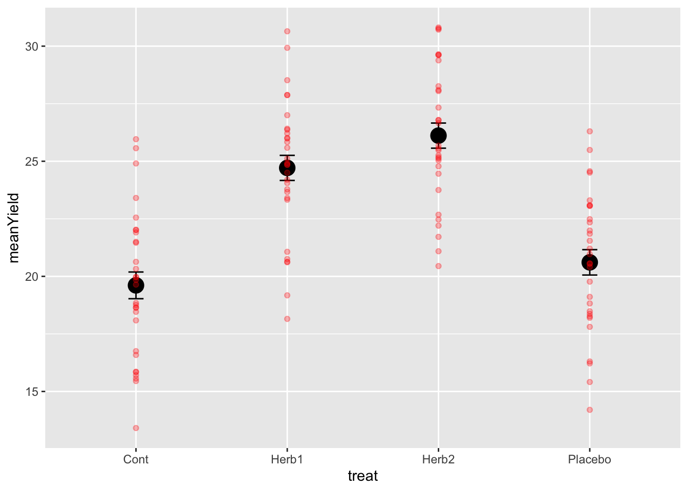
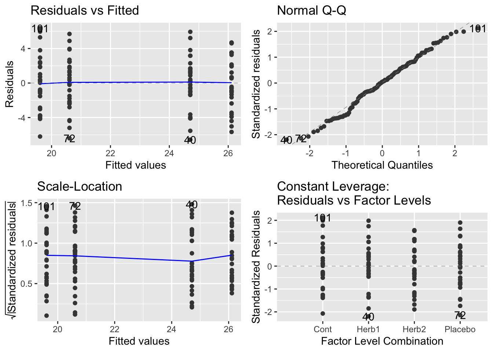

Chapter 5 Design and Analysis of Experiments
In this section, we will design and experiment, make up data for the experiment, and analyse the experiment.
This is a very good process to go through - you will understand more fully how to generate randomisation in your experiments, and you will better understand how data that you collect is structured - from where does variation come in your measurements.
Another way to think about this is to consider that we are learning how statistics looks at data you’ve collected. We are going to make up data, where we know the answer to the question. Then we are going to plot these data, and analyse them.
5.1 Example one
We are now going to cheat by generating artificial data we we don’t have time to go run the experiment.
The experiment is about plant biomass yield under several herbicide treatments: a control and two herbicides, and a third treatment that is a placebo - applied water but no herbicide. The hypothesis is….?
Start a new section of your script (some hashes) called Herbicide Example.
Now, enter the following code in your script file, then run it.
# set the random seed - this will ensure that your results and mine here are the same.
set.seed(123)
#treatment names we have a control and two herbicides, Herb3 is a placebo (applied water but no herbicide)
treat <- c("Cont","Herb1","Herb2","Placebo")
#number of replicates
Nreps <- 30
#Total number of experimental units
Total.units <- Nreps * length(treat)
#Our completely randomized design
# not the trick of adding the $book at the end of the code
design <- design.crd(treat, Nreps, serie = 0)$book
# check it out (the first 10 rows)
head(design, 10)## plots r treat
## 1 1 1 Cont
## 2 2 1 Herb1
## 3 3 2 Herb1
## 4 4 1 Placebo
## 5 5 2 Placebo
## 6 6 3 Placebo
## 7 7 3 Herb1
## 8 8 2 Cont
## 9 9 1 Herb2
## 10 10 2 Herb25.1.1 Making up data
Right, lets make up some artificial data so we know the right answers – this is a very good way of checking you understand what’s going on.
First, lets define some randon variation centred around 0 with a standard deviation of 3:
#Our experimental errors, normal distribution mean = 0, standard deviation = 3
# rnorm is random normal distribution - the bell curve!
error <- rnorm(Total.units, mean=0, sd=3)Now we need to actually generate a response variable. The thing we ‘measured.’ For this experiment we are measuring yield - the grams of dry biomass at the end of the experimental season.
To do this, we have to think about the mean of the yield (we’ll set it to 20), the deviation caused by Herbicide 1 (+5 average yield), the deviation caused by Herbicide 2 (+6 average yield) and the deviation caused by the placebo (nothing) and the error among observations (error). If this works, there should be Controls and Placebos with values around 20, and Herbicide values around ±25-26. But keep in mind… we have a standard deviation of 3 in the error… what will that do? Let’s see.
#the observations of yield
design$obs <-
# mean yield Control
20 +
# deviation caused by Herbicide 1
(design$treat=="Herb1") * 5 +
(design$treat == "Herb2") * 6 +
(design$treat == "Placebo")*1 +
error
# look at it
design$obs## [1] 25.56702 23.32992 23.39985 21.54529 20.96267 22.34314 24.19572 15.45247
## [9] 28.25849 28.09586 25.03735 26.36961 20.44643 16.30186 25.99108 29.62076
## [17] 24.05645 22.01011 25.48992 29.60826 25.83590 23.77995 21.06598 21.85137
## [25] 19.10903 20.54631 21.71607 24.78175 15.84089 24.56500 26.21161 19.96028
## [33] 16.21851 24.50682 17.80657 23.74981 30.64518 24.90522 27.33204 18.15174
## [41] 13.41104 27.87253 19.64131 22.48390 25.17527 15.41037 16.58438 15.85613
## [49] 20.56557 20.75066 19.84848 19.97868 22.47068 25.11759 25.55048 24.92058
## [57] 18.45873 22.02616 23.09377 15.56172 26.78291 18.20024 21.20411 25.58635
## [65] 25.67710 26.29930 22.20238 20.63010 30.71839 18.37104 29.64641 14.20080
## [73] 30.80997 22.67665 29.92778 20.63348 21.45997 20.32328 25.25901 18.08680
## [81] 18.75511 24.83941 27.00049 23.06356 27.87863 18.63813 16.75083 24.45870
## [89] 19.76979 23.40537 21.49970 21.09057 18.48304 18.64256 23.66625 28.52046
## [97] 18.82317 29.38274 22.55174 26.41338 25.95806 24.86078 21.90836 20.61218
## [105] 25.47680 21.99004 23.06115 20.40581 15.70540 23.30232 28.04868 18.26389
## [113] 30.76203 24.50311 19.17553 25.11028 26.65809 18.84203 26.01325 26.79324# look at the design now.
head(design)## plots r treat obs
## 1 1 1 Cont 25.56702
## 2 2 1 Herb1 23.32992
## 3 3 2 Herb1 23.39985
## 4 4 1 Placebo 21.54529
## 5 5 2 Placebo 20.96267
## 6 6 3 Placebo 22.343145.1.2 Into the dplyr and ggplot pipeline.
Great stuff. Now we can move to our standard data management and visualisation pipeline.
- review the data
- sumamrise the data with dplyr - generate means and se’s for the treatments
- visualise with ggplot2
# check the data
glimpse(design)## Rows: 120
## Columns: 4
## $ plots <dbl> 1, 2, 3, 4, 5, 6, 7, 8, 9, 10, 11, 12, 13, 14, 15, 16, 17, 18, …
## $ r <int> 1, 1, 2, 1, 2, 3, 3, 2, 1, 2, 3, 4, 4, 4, 5, 5, 6, 3, 5, 6, 7, …
## $ treat <chr> "Cont", "Herb1", "Herb1", "Placebo", "Placebo", "Placebo", "Her…
## $ obs <dbl> 25.56702, 23.32992, 23.39985, 21.54529, 20.96267, 22.34314, 24.…# summarise to get means and ses
sumDat <- design %>%
group_by(treat) %>%
summarise(
meanYield = mean(obs),
seYield = sd(obs)/sqrt(n())
)## `summarise()` ungrouping output (override with `.groups` argument)# plot the raw data and the mean±se
# start with the mean±se and then add the raw data
ggplot(sumDat, aes(x = treat, y = meanYield))+
geom_point(size = 5)+
geom_errorbar(data = sumDat, aes(ymin = meanYield - seYield, ymax = meanYield+seYield),
width = 0.1)+
geom_point(data = design, aes(x = treat, y = obs), colour = 'red', alpha = 0.3)
A few things to notice.
- The data are quite variable and the means of the herbicide treatments are roughly 5 and 6 units higher. This is as we expected….
- The standard errors are quite small! Why is that!?
- For those of you interested in some extra reading and thinking, the 95% Confidence Interval around the means can be calculated using
1.96*SE==1.96*sd(obs)/sqrt(n()). Go ahead and do that and look into that if you want…
5.2 The One-Way ANOVA.
If you’ve been paying attention, we’ve essentially designed and plotted the data for a 1-way ANOVA. These data are very similar to the daphnia parasite data we finished semester 1 with.
To analyse these data, we use the lm() function to build the model, check assumptions, and then make inference. Let’s go.
# the model
modYield <- lm(obs ~ treat, data = design)
# assumptions
autoplot(modYield)
# inference: anova
anova(modYield)## Analysis of Variance Table
##
## Response: obs
## Df Sum Sq Mean Sq F value Pr(>F)
## treat 3 888.39 296.129 31.968 3.905e-15 ***
## Residuals 116 1074.54 9.263
## ---
## Signif. codes: 0 '***' 0.001 '**' 0.01 '*' 0.05 '.' 0.1 ' ' 1# contrasts
summary(modYield)##
## Call:
## lm(formula = obs ~ treat, data = design)
##
## Residuals:
## Min 1Q Median 3Q Max
## -6.5589 -1.8698 0.1395 2.0230 6.3494
##
## Coefficients:
## Estimate Std. Error t value Pr(>|t|)
## (Intercept) 19.6087 0.5557 35.288 < 2e-16 ***
## treatHerb1 5.1019 0.7858 6.492 2.18e-09 ***
## treatHerb2 6.5048 0.7858 8.277 2.43e-13 ***
## treatPlacebo 0.9993 0.7858 1.272 0.206
## ---
## Signif. codes: 0 '***' 0.001 '**' 0.01 '*' 0.05 '.' 0.1 ' ' 1
##
## Residual standard error: 3.044 on 116 degrees of freedom
## Multiple R-squared: 0.4526, Adjusted R-squared: 0.4384
## F-statistic: 31.97 on 3 and 116 DF, p-value: 3.905e-155.2.1 Making insight and inference
Lets walks through things very discretely.
- Our graph suggests that herbicide treatments have an effect of increasing yield.
- Our model is designed to test this hypothesis - are any of the differences among means non-zero?
- Our hypothesis is probably really about whether the herbicide and placebos are differnt than the controls
- Our diagnostics are fantistic… the best you’ve ever seen.
- The Anova Table confirms that there are differences - we can reject the null hypothesis
- The summary table confirms that Herb1 and Herb2 are both larger than controls and the Placebo is not.
How do we interpret even more? The estimate associated with Control is 20! Just where it should be.
The estimates associated with Herb1, Herb2 and Placebo are the differences between the mean of these treatments and the control (the reference level!). These differences are positive for Herb1 and Herb2, close to 5 and 6 respectively (as expected) and this positive difference is not 0 via the statistical test.
However, the differnce for Placebo is close to 0 and therefore we can not reject the null hypothesis test that it differs from control. GENUIS!
5.3 A priori vs. Post-Hoc Contrasts
In the semester 1, we introduced how to do a Tukey Test.
This is known as an a posteriori test – testing the significance of things suggested by the experiment, also known as data snooping or data dredging. These are multiple comparison methods (Bonferroni, Scheffe method, Tukey honest significant difference, Duncan’s multiple range test) which try to control the chance of getting a significant result by chance.
To understand the risks of these, consider this experimental design. We have 7 treatments. With 7 treatments, there are 21 pairwise comparisons. With p-value threshold of \(0.05\) we expect 1/20 (5/100) tests to be significant. So with this 7 treatment and 21 comparison design, would you expect a signficant result by chance? You betyja.
This is why, unless a priori (in advance) you can justify ALL pairwise comparisons, a tukey test may not be appropriate.
Some statisticians really don’t like them “In my view multiple comparison methods have no place at all in the interpretation of data” Nelder (very well respected statistician).
5.3.1 The more appropriate approach.
The classical approach is to specify a priori (before experiment) a set of hypotheses then test them using contrasts. For our experiment, as noted above, we were probably interested in what our treatment contrasts provided - tests of difference with the control.
Specifying specific contrasts is easy once you get your head around the ‘structure’ of the syntax. Lets have a go with specifying a comparison JUST between Herbicide 1 and the control.
# check the levels and ORDERING of the treatments
levels(design$treat)## NULL# define the contrast you want using -1, 1 and 0's
# this says compare control with herbicide 1.... and ignore the Herb2 and Placebo
# we give the reference -1 and the 'other' 1.
contrast <- c(-1,1,0,0)
# use the fit.contrast function from gmodels
fit.contrast(modYield, "treat", contrast)## Estimate Std. Error t value Pr(>|t|)
## treat c=( -1 1 0 0 ) 5.101935 0.7858436 6.492304 2.181992e-09
## attr(,"class")
## [1] "fit_contrast"# remind ourselves of the contrast from the summary table
summary(modYield)##
## Call:
## lm(formula = obs ~ treat, data = design)
##
## Residuals:
## Min 1Q Median 3Q Max
## -6.5589 -1.8698 0.1395 2.0230 6.3494
##
## Coefficients:
## Estimate Std. Error t value Pr(>|t|)
## (Intercept) 19.6087 0.5557 35.288 < 2e-16 ***
## treatHerb1 5.1019 0.7858 6.492 2.18e-09 ***
## treatHerb2 6.5048 0.7858 8.277 2.43e-13 ***
## treatPlacebo 0.9993 0.7858 1.272 0.206
## ---
## Signif. codes: 0 '***' 0.001 '**' 0.01 '*' 0.05 '.' 0.1 ' ' 1
##
## Residual standard error: 3.044 on 116 degrees of freedom
## Multiple R-squared: 0.4526, Adjusted R-squared: 0.4384
## F-statistic: 31.97 on 3 and 116 DF, p-value: 3.905e-15Notice that the results are the same from the summary(modYield) and the fit.contrast.
If we want to compare the two herbicides we can use this approach. Note in advance that this contrast DOES NOT exist in the summary table!
# define the contrast you want using -1, 1 and 0's
# this says compare herb1 with herb2, ignoring the control and placebo.
# we give the reference -1 and the 'other' 1.
contrast <- c(0,-1,1,0)
# use the fit.contrast function from gmodels
fit.contrast(modYield, "treat", contrast)## Estimate Std. Error t value Pr(>|t|)
## treat c=( 0 -1 1 0 ) 1.402879 0.7858436 1.785189 0.07684408
## attr(,"class")
## [1] "fit_contrast"Isn’t this cool? Note that the difference reported is the difference between the two means:
# check our summary data
sumDat## # A tibble: 4 x 3
## treat meanYield seYield
## <chr> <dbl> <dbl>
## 1 Cont 19.6 0.580
## 2 Herb1 24.7 0.545
## 3 Herb2 26.1 0.546
## 4 Placebo 20.6 0.552Here it is: \(26.2 - 24.2 = 2\)
This says that despite the difference we created of ~1 unit of yield between Herb1 and Herb2, when we defined error and generated the data, it created a significant difference detectable with statistics.
5.3.2 comparing the average of the herbicide effect with the control.
This might be a comparison you intended to make also… the average effect of herbicides in general. To do this, we expand the idea of -1,1 and 0’s to include 1/2s (and yes, 1/3’s and more are possible):
# define the contrast you want using -1, 1 and 0's
# this says compare control with the average of herbicide 1 and 2, ignoring the placebo
# we give the reference -1 and the 'other two' a 1/2 each.
contrast <- c(-1,1/2,1/2,0)
# use the fit.contrast function from gmodels
fit.contrast(modYield, "treat", contrast)## Estimate Std. Error t value Pr(>|t|)
## treat c=( -1 0.5 0.5 0 ) 5.803375 0.6805605 8.527346 6.484593e-14
## attr(,"class")
## [1] "fit_contrast"Again, checking sumDat
sumDat## # A tibble: 4 x 3
## treat meanYield seYield
## <chr> <dbl> <dbl>
## 1 Cont 19.6 0.580
## 2 Herb1 24.7 0.545
## 3 Herb2 26.1 0.546
## 4 Placebo 20.6 0.552\((24.2+26.2)/2 = 25.2\) –> \(25.2 - 20 = 5.2\)
5.3.3 writing this up…
Fill in these blanks using the various contrasts you made above!
We conclude that herbicides on average cause an _____ gram increase in yield (t = ___ , p = ___ ). We also note that there was a significant difference of _____ grams between the herbicides (t = _____ p = ______). The additional placebo treatment had no effect on yield (t = _______ p = __________).